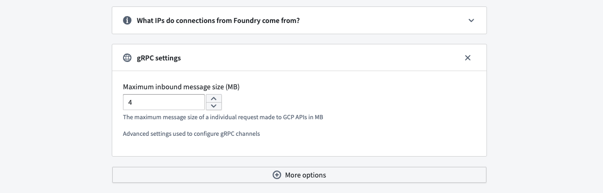

Connect Foundry to Google BigQuery to read and sync data between BigQuery tables and Foundry datasets.
| Capability | Status |
|---|---|
| Exploration | ð¢ Generally available |
| Bulk import | ð¢ Generally available |
| Incremental | ð¢ Generally available |
| Virtual tables | ð¢ Generally available |
| Compute pushdown | ð¢ Generally available |
| Export tasks | ð¡ Sunset |
Learn more about setting up a connector in Foundry.
:::callout{theme="warning"} You must have a Google Cloud IAM service account â to proceed with BigQuery authentication and set up. :::
The following Identity and Access Management (IAM) roles are required to use a BigQuery connector:
Read BigQuery data:
BigQuery Read Session User: Granted on BigQuery ProjectBigQuery Data Viewer: Granted on BigQuery data to read data and metadataBigQuery Job User (optional): Granted to ingest views and run custom queriesExport data to BigQuery from Foundry:
BigQuery Data Editor: Granted on BigQuery dataset or ProjectBigQuery Job User: Granted on BigQuery ProjectStorage Object Admin: Granted on bucket if data is exported with Google Cloud StorageUse temporary tables:
BigQuery Data Editor: Granted for BigQuery Project if dataset is automatically created by the connectorBigQuery Data Editor: Granted for the provided dataset as a place to store temporary tablesLearn more about required roles in the Google Cloud documentation on access control â.
Choose from one of the available authentication methods:
Note that virtual tables do not support GCP instance authentication credentials.
Service account key file: Refer to the Google Cloud documentation â for information on how to set up service account key file authentication. The key file can be provided as JSON or PKCS8 credentials.
Workload Identity Federation (OIDC): Follow the displayed source system configuration instructions to set up OIDC. Refer to the Google Cloud Documentation â for details on Workload Identity Federation and our documentation for details on how OIDC works with Foundry.
The BigQuery connector requires network access to the following domains on port 443:
bigquery.googleapis.combigquerystorage.googleapis.comstorage.googleapis.comwww.googleapis.comAdditional access may be required to the following domains:
oauth2.googleapis.comaccounts.google.comIf you are establishing a direct connection between Foundry on Google Cloud Platform (GCP) with BigQuery on GCP, you must also enable the connection through the relevant VPC service controls. If this connection is required for your setup, contact Palantir Support for additional guidance.
The following configuration options are available for the BigQuery connector:
| Option | Required? | Description |
|---|---|---|
Project ID |
Yes | The ID of the BigQuery Project; This Project will be charged for BigQuery compute usage regardless of what data is synced |
Credentials settings |
Yes | Configure using the Authentication guidance shown above. |
Cloud Storage bucket |
No | Add a name of a Cloud Storage bucket to be used as a staging location for writing data to BigQuery. |
Proxy settings |
No | Enable to allow a proxy connection to BigQuery. |
Settings for temporary tables |
No [1] | Enable to use temporary tables. |
gRPC Settings |
No | Advanced settings used to configure gRPC channels. |
Spark settings |
No [2] | Enable Spark-compatible BIGNUMERIC scale and precision to read unparameterized BIGNUMERIC columns in Spark when using virtual tables. When enabled, unparameterized BIGNUMERIC columns will use maximum precision and scale that is compatible with Spark's DecimalType. |
Additional projects |
No | Add the IDs of any additional Projects that must be accessed by the same connection; the Google Cloud account used as credentials for this connector will need to have access to these Projects. The connector Project Id will be charged for any BigQuery data access or compute usage. |
[1] Temporary tables must be enabled when registering BigQuery views â via virtual tables.
[2] Spark-compatible BIGNUMERIC scale and precision must be enabled in order to read unparameterized BIGNUMERIC columns. Given Spark supports a maximum precision and scale of 38 and 18 respectively, there may be data loss if the data's precision or scale in BigQuery exceeds these limits. Parameterized BIGNUMERIC columns with a precision or scale that exceed Spark's limits are not supported.
:::callout{theme="neutral"} For more complex scenarios, use virtual tables or pro-code alternatives. :::
The BigQuery connector allows for advanced sync configurations for large data syncs and custom queries.
To set up a BigQuery sync, select Explore and create syncs in the upper right of the source Overview screen. Next, select the tables you want to sync into Foundry. When you are ready to sync, select Create sync for x datasets.
Learn more about source exploration in Foundry.
After exploring your available syncs and adding them to your connector, navigate to Edit syncs. From the Syncs panel to the left, find the sync you want to configure and select > to the right.
Tables from BigQuery are imported into Foundry with the data saved in Avro format. Columns of type BIGNUMERIC and TIME are not supported at the time of import.
When exporting data from Foundry to BigQuery, all column types except for MAPS, STRUCTS and ARRAYS are supported.
Choose what data will be synced from BigQuery into Foundry.
Enter the following information to sync entire tables to Foundry:
| Option | Required? | Description |
|---|---|---|
BigQuery project Id |
No | The ID of the Project to which the table belongs. |
BigQuery dataset |
Yes | The name of the dataset to which the table belongs. |
BigQuery table |
No | The name of the table being synced into Foundry. |
Any arbitrary query can be run, and the results will be saved in Foundry. The query output must be smaller than 20GB (the maximum BigQuery table size), or temporary table usage must be enabled. Queries must start with the keyword select or with. For example: SELECT * from table_name limit 100;.
Typically, syncs will import all matching rows from the target table, regardless if data changed between syncs or not. Incremental syncs, by contrast, maintain state about the most recent sync and only ingest new matching rows from the target.
Incremental syncs can be used when ingesting large tables from BigQuery. To use incremental syncs, the table must contain a column that is strictly monotonically increasing. Additionally, the table or query being read from must contain a column with one of the following data types:
INT64FLOAT64NUMERICBIGNUMERICSTRINGTIMESTAMPDATETIMEDATETIMEExample: A 5 TB table contains billions of rows that we want to sync to BigQuery. The table has a monotonically increasing column called id. The sync can be configured to ingest 50 million rows at a time using the id column as the incremental column, with an initial value of -1 and a configured limit of 50 million rows.
When a sync is initially run, the first 50 million rows (ascending based on id) containing an id value greater than -1 will be ingested into Foundry. For example, if this sync was run several times and the largest id that was ingested during the last run of this sync was 19384004822, the next sync will ingest the next 50 million rows starting with the first id greater than 19384004822, and so on.
Incremental syncs require the following configurations:
| Option | Required? | Description |
|---|---|---|
| Column | Yes | Select the column that will be used for incremental ingests. The dropdown will be empty if the table does not contain any supported columns types. |
Initial value |
Yes | The value from which to start syncing data. |
Limit |
No | The number of records to download in a single sync. |
To enable incremental queries for custom query syncs, the query must be updated to match the following format:
SELECT * from table_name where incremental_column_name > @value order by incremental_column_name asc limit @limit
When syncing more than 20GB of data from a non-standard BigQuery table, temporary tables must be enabled. Temporary tables allow BigQuery to import results from large query outputs, import data from views and other non-standard tables, and allow for large incremental imports and ingests.
A single sync can import data up to the size available on the disk. For syncs running on a Foundry worker, this is typically limited to 600 GB. Use incremental syncs to import larger tables.
To use temporary tables, enable Settings for temporary tables in the connector configuration and, if needed, configure the following settings:
Palantir_temporary_tables dataset to store temporary tables. This option requires the BigQuery account to have the BigQuery Data Editor role on the project.BigQuery Data Editor role on the dataset provided.Note that temporary tables must be enabled when using BigQuery views â with virtual tables.
:::callout{theme="neutral"} For more complex scenarios, use pro-code alternatives. :::
Export to BigQuery is done via export tasks.
The connector can export to BigQuery in two ways:
Writing through APIs is suitable for a data scale of several million rows. The expected performance for this mode is to export one million rows in approximately two minutes. If your data scale range reaches billions of rows, use Google Cloud Storage instead.
To begin exporting data, you must configure an export task. Navigate to the Project folder that contains the connector to which you want to export. Right select on the connector name, then select Create Data Connection Task.
In the left side panel of the Data Connection view, verify the Source name matches the connector you want to use. Then, add an input dataset to the Input field. The input dataset must be called inputDataset, and it is the Foundry dataset being exported. The export task also requires one Output to be configured. The output dataset must be called outputDataset and point to a Foundry dataset. The output dataset is used to run, schedule, and monitor the task.
In the left panel of the Data Connection view:
Source name matches the connector you want to use.Input named inputDataset. The input dataset is the Foundry dataset being exported.Output named outputDataset. The output dataset is used to run, schedule, and monitor the task.:::callout{theme="neutral"} The labels for the connector and input dataset that appear in the left side panel do not reflect the names defined in the YAMl. :::
Use the following options when creating the export task YAML:
| Option | Required? | Default | Description |
|---|---|---|---|
project |
No | The Project ID of the connector | The ID of the Project that the destination table belongs to. |
dataset |
Yes | The name of the dataset to which the table belongs. | |
table |
Yes | The name of the table to which the data will be exported. | |
incrementalType |
Yes | SNAPSHOT | The value can either be SNAPSHOT or REQUIRE_INCREMENTAL. ⢠Export in snapshot mode: Contents of the destination table will be replaced. ⢠Export in incremental mode: Contents will be appended to the existing table. |
:::callout{theme="neutral"}
To set up incremental exports, run the first export as SNAPSHOT, then change incrementalType to REQUIRE_INCREMENTAL.
:::
Example task configuration:
type: magritte-bigquery-export-task
config:
table:
dataset: datasetInBigQuery
table: tableInBigQuery
project: projectId #(Optional: Do not specify unless the Project for export differs from the Project configured for the connector.)
incrementalType: SNAPSHOT | REQUIRE_INCREMENTAL
:::callout{theme="neutral"} Only datasets containing rows stored in Parquet format are supported for export to BigQuery. :::
After you configure the export task, select Save in the upper right corner.
If you need to append rows to the destination table, you can use REQUIRE_INCREMENTAL rather than replacing the dataset.
:::callout{theme="warning"} Incremental syncs require that rows are only appended to the input dataset and that the destination table in BigQuery matches the schema of the input dataset in Foundry. :::
To export via Cloud Storage, a Cloud Storage bucket must be configured in the connector configuration settings. Additionally, the Cloud Storage bucket must only be used for temporary tables for the connector so that any data temporarily written to the bucket is accessible to the least amount of users possible.
We recommend exporting to BigQuery via Cloud Storage rather than BigQuery APIs; Cloud Storage operates better at scale and does not create temporary tables in BigQuery.
The export job creates a temporary table alongside the destination table; this temporary table will not have extra access restrictions applied. Additionally, the SNAPSHOT export drops and recreates the table, meaning the extra access restrictions will also be dropped.
During an export via BigQuery APIs, data is exported to the temporary table datasetName.tableName_temp_$timestamp. Once the export is complete, rows are automatically transferred from the temporary table to the destination table.
:::callout{theme="warning"} Hive table partitions are not supported for export through BigQuery APIs. For datasets partitioned with Hive tables, export through Cloud Storage instead. :::
You can share the destination table if the export is run in REQUIRE_INCREMENTAL mode. Running in SNAPSHOT mode recreates the table on each run, and the sharing would need to be reapplied.
:::callout{theme="warning"} To successfully export via BigQuery APIs, do not apply BigQuery row-level or column-level permissions to the exported table. :::
Pro-code alternatives can be used to connect to BigQuery sources for more complex scenarios.
The examples below demonstrate how to connect to a BigQuery source using the Python client for Google BigQuery â google-cloud-bigquery in an external transform.
These examples are based on a Shipments table stored in BigQuery that represents a list of package shipments with their weight, carrier, and tracking number.
This example reads shipments from a given list of carriers and above a certain weight.
from pandas import DataFrame
from transforms.api import lightweight, Output, Input, transform_pandas
from transforms.external.systems import ResolvedSource, external_systems, Source
from google.cloud import bigquery
import json
@lightweight
@external_systems(
bigquery_source=Source("<source_rid>")
)
@transform_pandas(
Output("<dataset_rid>"),
carriers_df=Input("<dataset_rid>") # dataframe with schema [carrier_name: String, carrier_details: String]
)
def read(bigquery_source: ResolvedSource, carriers_df: DataFrame) -> DataFrame:
# Authenticate BigQuery client
account_info = json.loads(bigquery_source.get_secret("jsonCredentials"))
client = bigquery.Client.from_service_account_info(account_info)
# Table reference
bigquery_project = "<bigquery_project_id>"
bigquery_dataset = "<bigquery_dataset_id>"
bigquery_table = "<bigquery_table_id>"
table_ref = f"{bigquery_project}.{bigquery_dataset}.{bigquery_table}"
# Filter parameters
carrier_list = carriers_df['carrier_name'].drop_duplicates().tolist()
min_weight = 10
job_config = bigquery.QueryJobConfig(
query_parameters=[
bigquery.ArrayQueryParameter("carrier_list", "STRING", carrier_list),
bigquery.ScalarQueryParameter("min_weight", "FLOAT64", min_weight)
]
)
query = f"""
SELECT shipment_id, carrier, weight, tracking_number
FROM `{table_ref}`
WHERE carrier IN UNNEST(@carrier_list) AND weight >= @min_weight
"""
query_job = client.query(query, job_config=job_config)
return query_job.to_dataframe()
This function updates tracking numbers for shipments based on the provided shipment information, and then returns the updated shipment details.
from pandas import DataFrame
from transforms.api import lightweight, Output, Input, transform_pandas
from transforms.external.systems import ResolvedSource, external_systems, Source
from google.cloud import bigquery
import json
@lightweight
@external_systems(
bigquery_source=Source("<source_rid>")
)
@transform_pandas(
Output("<dataset_rid>"),
shipments_df=Input("<dataset_rid>"), # DataFrame with schema [shipment_id: Long, tracking_number: String]
)
def update_tracking_numbers(bigquery_source: ResolvedSource, shipments_df: DataFrame) -> DataFrame:
# Authenticate BigQuery client
account_info = json.loads(bigquery_source.get_secret("jsonCredentials"))
client = bigquery.Client.from_service_account_info(account_info)
# Table reference
bigquery_project = "<bigquery_project_id>"
bigquery_dataset = "<bigquery_dataset_id>"
bigquery_table = "<bigquery_table_id>"
table_ref = f"{bigquery_project}.{bigquery_dataset}.{bigquery_table}"
# 1. Clear temporary table if it exists
temp_table_id = f"{bigquery_project}.{bigquery_dataset}.temp_update_tracking"
client.delete_table(temp_table_id, not_found_ok=True)
# 2. Upload shipments_df to a temporary table
load_job_config = bigquery.LoadJobConfig(
schema=[
bigquery.SchemaField("shipment_id", "INT64"),
bigquery.SchemaField("tracking_number", "STRING"),
]
)
job = client.load_table_from_dataframe(shipments_df, temp_table_id, job_config=load_job_config)
job.result() # Wait for load to finish
# 3. MERGE to update tracking_number in main table
merge_query = f"""
MERGE `{table_ref}` T
USING `{temp_table_id}` S
ON T.shipment_id = S.shipment_id
WHEN MATCHED THEN
UPDATE SET tracking_number = S.tracking_number
"""
client.query(merge_query).result()
# 3. (Optional) Clean up temporary table
client.delete_table(temp_table_id, not_found_ok=True)
# Optionally, return the updated rows as a DataFrame for confirmation
updated_ids = shipments_df["shipment_id"].tolist()
query = f"""
SELECT shipment_id, tracking_number
FROM `{table_ref}`
WHERE shipment_id IN UNNEST(@updated_ids)
"""
job_config = bigquery.QueryJobConfig(
query_parameters=[
bigquery.ArrayQueryParameter("updated_ids", "INT64", [int(x) for x in updated_ids])
]
)
updated_rows = client.query(query, job_config=job_config).to_dataframe()
return updated_rows
This section provides additional details around using virtual tables with a BigQuery source. This section is not applicable when syncing to Foundry datasets.
The table below highlights the virtual table capabilities that are supported for BigQuery.
| Capability | Status |
|---|---|
| Bulk registration | ð¢ Generally available |
| Automatic registration | ð¢ Generally available |
| Table inputs | ð¢ Generally available: tables, views, materialized views in Code Repositories, Pipeline Builder |
| Table outputs | ð¢ Generally available: tables in Code Repositories, Pipeline Builder |
| Incremental pipelines | ð¢ Generally available: APPEND only [1] |
| Compute pushdown | ð¢ Generally available |
Consult the virtual tables documentation for details on the supported Foundry workflows where BigQuery tables can be used as inputs or outputs.
[1] To enable incremental support for pipelines backed by BigQuery virtual tables, ensure that Time Travel â is enabled with the appropriate retention period. This functionality relies on Change History â and is currently append-only. The current and added read modes in Python Transforms are supported. The _CHANGE_TYPE and _CHANGE_TIMESTAMP columns will be made available in Python Transforms.
:::callout{theme="warning"}
It is critical to ensure that incremental pipelines backed by virtual tables are built on APPEND-only source tables, as BigQuery does not provide UPDATE or DELETE change information. See official BigQuery documentation â for more details.
:::
When using virtual tables, remember the following source configuration requirements:
BIGNUMERIC columns in Spark.See the Connection details and Temporary tables section above for more details.
Foundry offers the ability to push down compute to BigQuery when using virtual tables. Virtual table inputs leverage the BigQuery Spark connector â which has built-in support for predicate pushdown.
When using BigQuery virtual tables registered to the same source as inputs and outputs to a pipeline, it is possible to fully federate compute to BigQuery. This feature is currently available in Python transforms. See the Python documentation for details on how to push down compute to BigQuery.
<dataset> was not found in location <location>BigQuery determines the location where a given query will be run based on either the inputs used in the query or where the results of the query are being stored. When temporary tables are used, the output is set to a temporary table in the temporary tables dataset; the location of this dataset will determine where the query is run. Ensure that all inputs of the sync and the temporary tables dataset are in the same region. If the Automatically create dataset. setting is enabled, use the Google Cloud console or Google's SDKs/APIs to determine the location of the dataset called Palantir_temporary_tables.
If syncing data with large content like JSON columns, the transfer may fail with the above error. Adjust BigQuery's Maximum inbound message size in gRPC Settings on the source to increase data transfer in a single API call. Remember, a single call fetches multiple rows, so setting it to the largest row size may not be enough.
You can find this configuration option by navigating to Connection Settings > Connection Details, then scrolling to More options and selecting gRPC Settings.

If your preview fails to load and the target BigQuery table is a view, this may be the result of a schema mismatch. Views' schemas are determined by the result of the SQL query defined at the time of creation. Subsequent changes to the underlying table's structure are not automatically applied to the view's schema and may lead to unexpected behavior when trying to consume the view (such as via a sync/virtual table in the Palantir platform.)
You can verify this by comparing the schemas between the view and the underlying table in the BigQuery console, checking for any discrepancies. This can include:
In the case that any discrepancies are identified, you can address them by recreating or refreshing the view using CREATE OR REPLACE VIEW or ALTER VIEW. For more information, reference this Google Cloud community post â which describes the expected behavior in more detail and provides additional guidance on best practices.